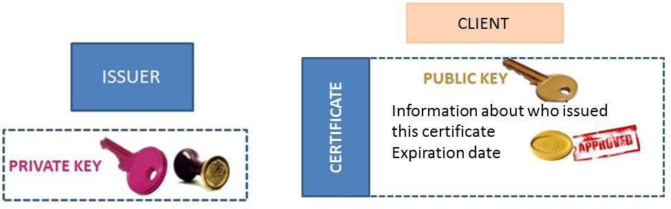
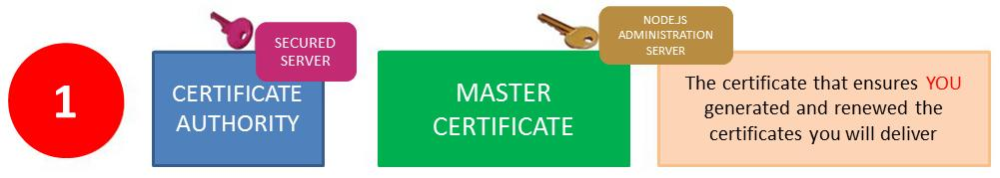
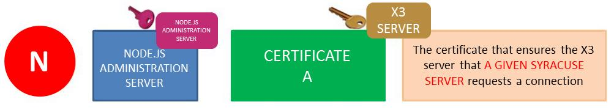
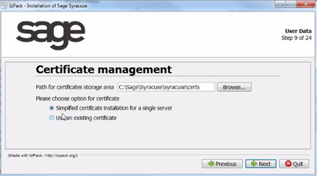
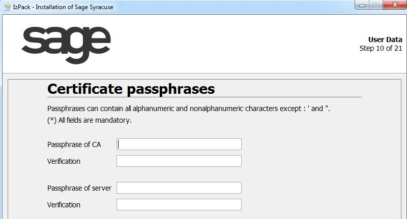
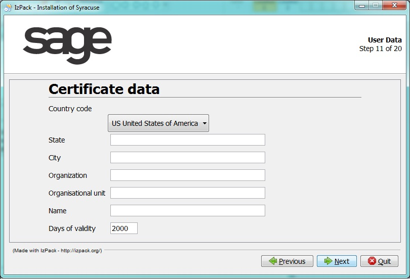
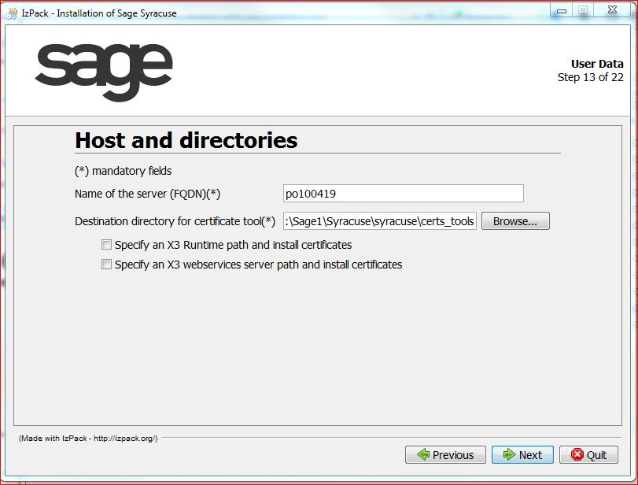
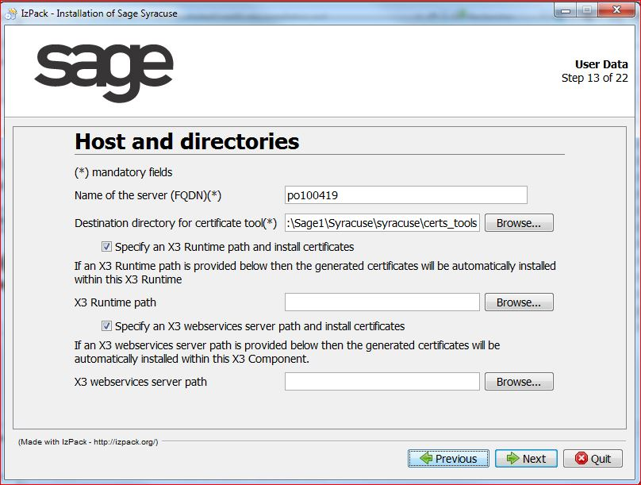
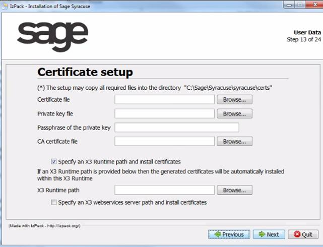

Certificate Installation
The trusted connection between node servers and Sage X3 servers is based on signed certificates. This document explains how the certificates must be set up.
- Introduction to certificates
- Simplified certificate procedure
- Complete generation procedure
- Appendix: detailed generation procedure
Introduction to certificates
General principles
In public key cryptography, the public key can be distributed to many people while the private key should be kept private. Only the holder of the private key can decrypt data that has been encrypted using the public key.
You can compute the digital signature of data using the private key. Anyone who has the public key can verify the digital signature, and thus make sure that the data has not been changed. It is almost impossible to change data without changing the signature, or to compute a valid signature without the private key.
The private key is very sensitive and it is usually encrypted using a passphrase (similar to a password but more complicated). You can only use the private key if you know the passphrase.
A certificate is a bundle containing a public key, a digital signature and some additional data. Certificates always involve two parties:
- The subject (a person or organization), who provides the public key and most of the additional data.
- The issuer, who essentially seals the data with a digital signature.
Certificates contain:
- information about the issuer and the subject of the certificate,
- an expiration date,
- the subject's public key,
- the issuer's digital signature to verify that the certificate is not fake.
The certificate allows you to make sure that the subject of the certificate has the corresponding private key.
This diagram summarizes the components that are set up for certificate management:

Certificates management
Master certificate
The first step is to create a master certificate (or CA certificate). It is used as a certification authority (the issuer and subject are the same) and it identifies a domain of trust for your company or organization.
For stronger security, the certificate must be generated on a secure server, and the private key must never be transferred. The master certificate, however, can be transferred on different node.js servers as illustrated in the diagram below:

In this diagram, you can see that only one master certificate exists, and that the corresponding private key is kept safe on a master secured server while the certificate is distributed on each node.js server.
node.js certificate
The second step is to create a private and a public key, as well as a certificate for each node.js server. They are generated using the master certificate and the master private key. The issuer is the certification authority and the subject is the node.js server.
This step secures the connections to Sage X3 and it can also secure the connection between node.js servers. Every time a connection request is sent from a node.js server to a Sage X3 server, encrypted data is sent. The Sage X3 server can identify the server that connects using the public key and ensure the authentication. This is why there are as many certificates as there are node.js servers.
This corresponds to the following diagram:

In this diagram, you can see that there are as many certificates and private keys as there are node.js servers. The private key and certificate remain on the node.js server, while the public key is distributed to the Sage X3 servers. The Sage X3 servers then receive a connection from the corresponding node.js server.
Note that the Sage X3 servers will only get the public key, without the certificate itself or the private key.
Simplified certificate procedure
Overview
While it is impossible to completely automate the generation and distribution of certificates and keys for security reasons, there is a simplified method that allows an automation of the installation.
This method was designed for cases where a unique node.js server is installed on the network.
Note that:
- The node.js server generates the CA certificate and private key.
- The node.js certificate, and the public and private keys are also generated on this server.
- If an additional check box communicating that the Sage X3 server is located on a server accessible through the network is selected, the public key is copied automatically. Otherwise, the transfer will have to be done manually after running the procedure.
If you want a separate server to create the certificates in a very secured environment, run the complete generation procedure instead.
Key generation procedure
The key generation takes place during software installation.
- Follow the installation procedure until you reach step 9:

Change the path where the certificate will be stored, if necessary. - Select an option for the certificate and click Next.
- If you selected Simplified certificate installation for a single server:
- Enter a passphrase for the private key of the certification authority and another for the server certificate.
- Enter them a second time in the Verification fields.
Make sure that the passphrases use a mix of digits, lower and upper case letters, as well as special characters.
Caution: Make sure you memorize these passphrases as there is no way to recover them. - Click Next.
- Enter the required information about the issuer:

Caution: When entering a value in the Days of validity field, keep in mind that you will have to create new certificates and distribute them at the end of the duration selected. Make sure you choose the best compromise between security and convenience. - Click Next
- Enter the name of the server and select the folder where the certificate tool is installed.
 - Select Specify a Sage X3 Runtime path and install certificates if a single physical server hosts the node.js server and the Sage X3 runtime, or Specify a Sage X3 webservices server path and install certificates if applicable.
- Click Browse and select the correct path if you have selected any of these two options so that the public key is automatically copied in the correct folder:
 - Click Next.
- Enter a passphrase for the private key of the certification authority and another for the server certificate.
- If you selected Use an existing certificate, enter the certificate information.
Click Next.
 - Follow the rest of the installation procedure.
Complete generation procedure
The key generation process consists in:
- Generating the certificates
- Distributing the certificates to the node.js servers
- Distributing the public keys to the Sage X3 server
Generating the certificates
Pre-requisites:
- You need a secure computer (without Internet access, if possible). This computer does not need to be part of the node.js cluster.
- Java 7 must be installed on the computer.
To generate the certificates:
- Copy the contents of the "bin/cert_gen" folder of a node.js installation into a file system folder of the computer.
- Open a cmd prompt and enter the following command:
java -jar certgen.jar
Note: You need to have write access to the folder and subfolders.
The program creates subfolders "private" (for the private key of the generated certificate authority) and "output" (for all other certificates, server private keys, and public keys). - If you are running this program for the first time, enter the data that will be used to sign all certificates.
- Create a certificate for each server on which node.js runs.
The name must be the hostname of the node.js server (the same name as the output of the "hostname" command). It will be automatically converted to lowercase. - Enter the server name of the TCP connections.
It must be the server name or the IP address on which the server can be reached by TCP from all other node.js servers.
If you generate the certificates on a computer that has a network connection to the node.js servers, you can automatically transfer the certificates if you have already copied the CA certificate to each server.
For a complete list of program options, refer to the appendix.
At the end of the process, the output subfolder contains the following files:
- "ca.cacrt", the certificate of the generated certification authority
- For each server:
- A ".crt" file containing the certificate
- A ".key" file containing the private key
- A ".pem" file containing the corresponding public key which is used by Sage X3 servers for communication with the server.
Note that characters "$", "." and "@" are replaced with "_" in the name of the ".pem" file.
The name is always the hostname of the server in lowercase.
Distributing the certificates to the node.js servers
- Locate the folder created by the setup process for the certificates on each server. Go to the subfolder named after the server name.
Under Unix, this subfolder is only accessible by the user running the node.js process. - Copy files "ca.cacrt" in this subfolder.
- If you do not want to transfer the certificate, private key, and passphrase using the certificate generation tool, copy the ".key" and ".crt" files named after the server name in this subfolder manually.
- In the node.js installation folder, locate batch file "passphrase.cmd" or shell script "passphrase.sh"
Invoke either of these files with one parameter (either the passphrase of the private key) from the command prompt.
This sets and encrypts the passphrase, and checks the certificate and private key.
You can check your settings by invoking the passphrase file with special parameter "-check".
Note: It is not possible to set "-check" as a passphrase for a server key. A passphrase must also include at least four characters. - Once this is done, start the administration application.
- In the Hosts entity, make sure that all hosts have the "OK" status and that the security check box is selected.
Distributing the public keys to the Sage X3 server
Each node.js server has to authenticate against each Sage X3 server it invokes. There are two possibilities:
If the x3server entity has certificates that are declared, you have to copy the public key file (with a ".pem" extension) for the certificates into the keys subfolder of the Sage X3 runtime. You also have to copy this file in the \data \KEYSTORE \WEBSERVER \ subfolder if the webservice ADC server is installed.
This applies to certificates that were not manually installed for node.js servers. You can also generate new certificates by using the certificate generation tool and install them on all node.js servers by adding a new instance of the certificate entity.
If the x3server entity has no certificates declared, you have to copy all public keys of the node.js servers (all ".pem" files of the output folder of the certificate generation tool) into the keys subfolder of the Sage X3 runtime. You also have to copy these files in the \data \KEYSTORE \WEBSERVER \ subfolder if the webservice ADC server is installed.
This step must be performed each time you add a new node.js server.
We can illustrate this last option by using an example where you have two node servers (A and B), and two Sage X3 servers (1 and 2). If you want the Sage X3 server 1 to accept connections from both node.js servers (A and B), and Sage X3 server 2 to accept connections only from node.js server A, the deployment policy is summarized in the following table, where:
- yes means that the file must be installed.
- yes/transfer means that the file must be installed unless you use the certificate generation tool to transfer this data.
- no means that the file must not be installed.
- never means that installing the corresponding file would create a critical security breach.
- generated means that the file is generated there and should remain for certificate evolution purposes only.
- available means that the file is generated there and must remain there.
| Type of file | Installed on | ||||
|---|---|---|---|---|---|
| Secured CA server | node.js server A | node server B | Sage X3 server 1 | Sage X3 server 2 | |
| CA certificate | available | yes | yes | no | no |
| CA private key | available | never | never | never | never |
| Certificate for server A | generated | yes/transfer | no | no | no |
| Server A private key | generated | yes/transfer | never | never | never |
| Server A public key | generated | no | no | yes | yes |
| Certificate for server B | generated | no | yes/transfer | no | no |
| Server B private key | generated | never | yes/transfer | never | never |
| Server B public key | generated | no | no | yes | no |
Appendix: Detailed generation procedure
Certificates, private keys, and their passphrases are very sensitive data that cannot be stored in the database. Instead, it is kept in a folder of the local file system with limited access rights. The encrypted passphrases are kept in a separate file in the same folder.
On customer site, the administrator generates a private key and a self-signed certificate which acts as the certification authority. For each server in the cluster, a certificate and a private key are generated in such a way that the certificate can act as a server certificate for HTTPS. The certificates are signed using the previously generated self-signed certificate.
Generating certificates
The administrator uses a command line tool to generate the certificates. The tool is independent from the node.js installation folders and must be run on a separate computer. The following is a list of possible use cases for this tool:
- The tool can be used with or without command line parameters, and it can fetch the missing data from the console if the "-batch' switch is not set.
- If the "-batch" switch is set, there is no input from the console and an error is displayed when data is missing. This switch is recommended when you use the tool within batch files.
- You can generate the certificate, public key, and private key files and copy them manually to the node.js servers. This is the most secure option because you can generate the certificates on a computer that is not part of any network. However, if there is a network connection from the computer in which the tool runs to the node.js servers, it may be easier because the tool can transfer the server certificate, private key, and passphrase to a node.js server using HTTP requests with encrypted data.
For the last option, the CA certificate must have been manually copied to the node.js servers so that the node.js servers can make sure they can trust the data. Alternatively, you can add a "-notransfer" switch to the invocation of the tool to switch off all transfer options.
When node.js cannot be reached, the tool stops with an error message. It you set the "-wait" option with a positive number, the tool will try to connect to this port several times for the number of seconds specified. If you set the "-port" switch with a positive number, the tool will transfer the data to the node.js server, even in batch mode.
First Invocation
When the tool is started for the first time, it creates an output folder and a private folder as explained in Complete generation procedure. This separation reduces the risk of copying the CA private key unintentionally.
The tool will also generate the certificate and private key of the certification authority. All other actions will be rejected. To do this, it needs:
- The subject distinguished name of the CA certificate, either interactively or behind the command line parameter "-dn". The distinguished name must follow the AVA format for distinguished names according to IETF.
- The passphrase of the CA private key, either interactively or behind the command line parameter "-capass".
- The number of days the certificate should stay valid starting from the current time, either interactively or behind the command line parameter "-days".
- Optional: the port of the node.js server to which the server certificate should be transferred via encrypted HTTP requests, either interactively by entering a positive port number or behind the command line parameter "-port". This only works when the server already has the CA certificate.
When the CA certificate is available, the user can perform a number actions. If the corresponding command line parameter is not given, the action will be asked interactively. Note that the CA passphrase will only be prompted once when you do several actions within one session of the program.
Creating a new server certificate (command line parameter "-create")
This action requires:
- The computer name of the server, interactively or as a last command line parameter.
- The passphrase of the private key for the server certificate, interactively or behind a "-pass" parameter.
- The passphrase of the private key for the CA certificate, interactively or behind a "-capass" parameter.
- The server name as it should be used from other servers in TCP connections, either interactively, as the common name of a distinguished name behind the "-dn" parameter, or as a value behind the "-cn" parameter. The default value is the computer name. The other parts of the distinguished name will be used from the CA certificate unless the "-dn" parameter is given.
- The number of days the certificate should stay valid starting from the current time, either interactively or behind the command line parameter "-days". By default, it is the same as the validity of the CA certificate.
Note: Unless the "-notransfer" switch is set, you will be prompted for the port of a node.js server. If you enter a valid positive port number, the data will be transferred to that server using encrypted HTTP requests.
Renewing the validity of the certificate (command line parameter "-renew-cert")
This action generates a new certificate with the same subject but a different validity. It requires:
- The computer name of the server, interactively or as a last command line parameter.
- The passphrase of the private key for the CA certificate, interactively or behind a "-capass" parameter.
- The number of days the certificate should stay valid starting from the current time, either interactively or behind the command line parameter "-days". By default, it is the same as the current validity of the certificate.
Note: Unless the "-notransfer" switch is set, you will be prompted for the port of a node.js server. If you enter a valid positive port number, the data will be transferred to that server using encrypted HTTP requests.
Renewing the validity of all certificates (command line parameter "-renew-all-certs")
This action changes the validity of the CA certificate and all server certificates in a single action. It requires:
- The passphrase of the private key for the CA certificate, interactively or behind a "-capass" parameter.
- The number of days the certificate should stay valid starting from the current time, either interactively or behind the command line parameter "-days". By default, it is the same as the current validity of the certificate.
Note: Unless the "-notransfer" switch is set, you will be prompted for each port of node.js servers, one after the other. If you enter a valid positive port number, the data, including the new CA certificate, will be transferred to that server. This does not work in batch mode.
Generating a new private key (command line parameter "-renew-key")
This action generates a new pair of public and private keys, and generates a new certificate with the same subject and validity, but containing the new public key. When this is applied to the CA certificate, it automatically signs all server certificates with the new key. It requires:
- The computer name of the server or an empty name for the CA certificate, interactively or as a last command line parameter.
- The passphrase of the new private key, interactively or behind a "-pass" parameter. When the CA certificate key is changed, the "-capass" parameter should be used instead.
- For server certificates only, the passphrase of the existing private key for the CA certificate, interactively or behind a "-capass" parameter.
Note: Unless the "-notransfer" switch is set, you will be prompted for the port of a node.js server. If you enter a valid positive port number, the data will be transferred to that server using encrypted HTTP requests. When you change the key of the CA certificate, you will be prompted for each port of the node.js servers, one after the other. If you enter a valid positive port number, the data, including the new CA certificate, will be transferred to that server. This does not work in batch mode.
Changing the subject of the certificate (command line parameter "-change-name")
This action changes the subject of the certificate without changing the validity. If applied to the CA certificate, it changes the issuer of all CA certificates and signs them again. When the subject of the certificate is identical to the issuer (except for the common name), the subject (except for the common name) will also be changed. It requires:
- The computer name of the server or an empty name for the CA certificate, interactively or as a last command line parameter.
- The passphrase of the private key for the CA certificate, interactively or behind a "-capass" parameter.
- The number of days the certificate should stay valid starting from the current time, either interactively or behind the command line parameter "-days". By default, it is the same as the current validity of the certificate.
- The new distinguished name of the subject. You can enter this interactively (with the old name being the default), using the parameter "-cn" to set a new common name, or using the parameter "-dn to set a new distinguished name. The distinguished name must follow the AVA format for distinguished names according to IETF. For server certificates, you will only be prompted for the new common name (name of the server as it is used in TCP connections), and for the CA certificate you will be prompted for all parts of the common name.
Note: Unless the "-notransfer" switch is set, you will be prompted for the port of a node.js server. If you enter a valid positive port number, the data will be transferred to that server. When you change the key of the CA certificate, you will be prompted for all ports of the node.js servers, one after the other. If you enter a valid positive port number, the data, including the new CA certificate, will be transferred to that server. This does not work in batch mode.
Showing the contents of the certificate (command line parameter "-show")
This action shows the subject and issuer distinguished names, and the start and end date of the certificate validity. It requires the computer name of the server or an empty name for the CA certificate, interactively or as a last command line parameter.
Showing the contents of all certificates (command line parameter "-show-all")
This action shows the subject and issuer distinguished names, and the start and end date of the validity for all certificates. It does not require any further data.
Deleting data for a server (command line parameter "-delete")
This action deletes the certificate, public key file (for the Sage X3 server) and the private key file from the output directory. The CA certificate cannot be deleted in this manner. It requires the computer name of the server, interactively or as a last command line parameter.
Transferring certificate and private key (command line parameter "-transfer")
This action is only available if the "-notransfer" switch is not set. It will transfer the corresponding certificate, private key, and passphrase to the appropriate server, provided these files are in the output folder. It requires:
- The computer name of the server or an empty name for the CA certificate, interactively or as a last command line parameter.
- The passphrase of the private key for the server certificate, interactively or behind a "-pass" parameter.
- The passphrase of the private key for the CA certificate, interactively or behind a "-capass" parameter.
- The port of the node.js server, interactively or behind a "-port" parameter.
Setting the passphrase for the private key on a node.js server
This is only necessary when you do not use the certificate generation tool to transfer the passphrase. It is done using the "passphrase.cmd" batch file or the "passphrase.sh" shell script (as described in Distributing the certificates to the node.js servers). This action encrypts the password of the generated private key on the server depending on the user (for example, on MS Windows using CryptProtectData). When it is invoked without further parameters, it checks the validity of the certificates. Otherwise, it sets and encrypts the passphrase.
Details about the encrypted transfer of certificate data
The certificate generation tool makes two requests to the node.js server. One for a Diffie-Hellman key exchange, and another one to transfer the data, encrypted with the common secret Diffie-Hellman key and signed with the private CA key. The tool authenticates using the private CA key and the node.js server authenticates using the public CA key. The reachability by the server name is set as the subject common name in the server certificate.
Structure of the certificate folder
The setup generates a special folder for certificates and keys, and writes its path to the "nodelocal.js" file.
In the certificate folder, there is a subfolder with the computer name in lower case containing the following files:
- "ca.cacrt": Certificate of the generated certification authority. There may be other certificates of certification authorities with the extension .cacrt.
- "[server-name].crt": Certificate of the server. There may be other certificates with the extension .crt.
- "[server-name].key": Private key file of the server. There may be other private key files with the extension .key.
- "[server-name].pwd": File with the encrypted passphrases for all private keys of that server.
Note: The purpose of the subfolder within the certificate directory is to avoid problems when the administrator chooses to install everything on a network drive. In such a case, the certificates of the different servers have to be stored within the same folder. The subfolder and its files' access rights must be limited to the operating system user under which the node.js processes will run.
Certificate entity
The entity for certificates (Administration > Certificates > Certificates) and CA certificates (Administration > Certificates > Certificates of Certification Authorities) contain the metadata for the certificates and private keys:
- A logical name, consisting of lower case letters, underscore, and dot. It acts as the key value that will be the computer name for the administrator-generated server certificates and private keys. It also acts as the CA for the administrator-generated certification authority.
- If the certificate is administrator-generated, a marker has been manually installed at setup time. It cannot be changed using the GUI.
- The checksum of the certificate (not for the administrator-generated certificates) to ensure integrity. It is a hidden field.
- Validity of the certificates.
- Distinguished names of issuer and subject.
The certificate entity also contains:
- A flag if a private key has been uploaded for that certificate.
- An upload field for the certificate, but only the checksum of the certificate will be stored in the database.
- An upload field for the private key.
- An input field for the passphrase that will not be stored in the database.
Some certificates are only useful for one server (for example, SSL server certificate). The corresponding instance of the host entity is placed as a related instance to the certificate instance. When there is no instance, the certificate is stored on all hosts and is transferred to servers where the certificate is missing during startup. This applies when new servers are added to the cluster, for example.
The fields for the certificate, the private key, and the passphrase are input fields only. However, you can update the certificate alone and leave the private key unchanged. The following consistency checks will be done:
- The certificate and private key have the correct PEM format.
- The passphrase matches the private key.
- The certificate matches the private key. This check is done on a server that has all the data, and not only the data which has been entered on screen. As a result, this check also occurs when the user uploads a certificate alone since the private key has already been uploaded.
The instances of the certificate entity and the CA certificate entity (which correspond to the administrator-generated certificates) will be marked as read-only.